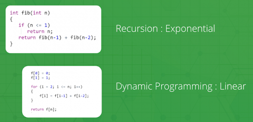

Dynamic Programming
Dynamic Programming is a technique in computer programming that helps to efficiently solve a class of problems that have overlapping subproblems and optimal substructure properties.
If any problem can be divided into subproblems, which in turn are divided into smaller subproblems, and if there are overlapping among these subproblems, then the solutions to these subproblems can be saved for future reference. In this way, efficiency of the CPU can be enhanced. This method of solving a solution is referred to as dynamic programming.
Such problems involve repeatedly calculating the value of the same subproblems to find the optimum solution.
Dynamic Programming Example:
Let's find the fibonacci sequence upto 5th term. A fibonacci series is the sequence of numbers in which each number is the sum of the two preceding ones. For example, 0,1,1, 2, 3. Here, each number is the sum of the two preceding numbers.
Algorithm:
Let n be the number of terms.
1. If n <= 1, return 1.
2. Else, return the sum of two preceding numbers.
We are calculating the fibonacci sequence up to the 5th term.
1. The first term is 0.
2. The second term is 1.
3. The third term is sum of 0 (from step 1) and 1(from step 2), which is 1.
4. The fourth term is the sum of the third term (from step 3) and second term (from step 2) i.e. 1 + 1 = 2.
5. The fifth term is the sum of the fourth term (from step 4) and third term (from step 3) i.e. 2 + 1 = 3.
Dynamic Programming is mainly an optimization over plain recursion. Wherever we see a recursive solution that has repeated calls for the same inputs, we can optimize it using Dynamic Programming. The idea is to simply store the results of subproblems, so that we do not have to re-compute them when needed later. This simple optimization reduces time complexities from exponential to polynomial. For example, if we write simple recursive solutions for Fibonacci Numbers, we get exponential time complexity and if we optimize it by storing solutions of subproblems, time complexity reduces to linear.

Watch the video for understande more-